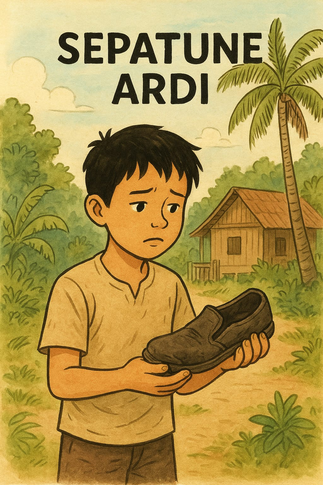
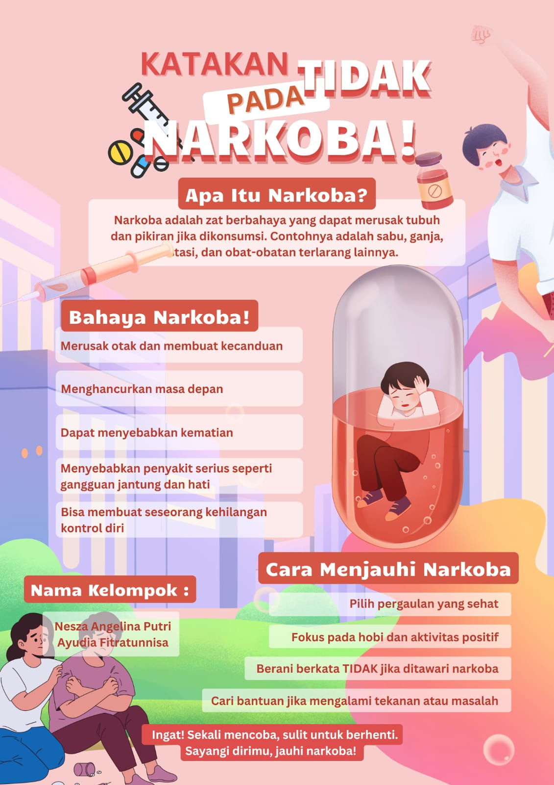

Sepatune Ardi

Ardi kuwi bocah sing dikenal anteng lan ora seneng neko-neko. Saben dina, sepatu irenge sing wis rada mbladus tetep dianggo menyang sekolah, nanging dheweke ora peduli. Sing penting bisa sekolah lan mbantu ibune sawise bali.
Nanging wiwit kelas 11, Ardi mulai kerep ora mlebu. Kancane padha pitakon, nanging Ardi mung senyum hambar. Ora ana sing ngerti yen Ardi lagi kélangan bapake sing lunga tanpa kabar, ninggal tanggung jawab kahanan ekonomi sing saya abot.
Ing wektu sing angel kuwi, Ardi kenalan karo Gopal, priya enom saka kampung seberang sing kerep nongkrong neng pinggir dalan karo geng e. Awale mung nongkrong biasa, ngrumpi, ngopi sachet, lan ngguyu bareng. Nanging suwe-suwe Gopal ngetokake lintingan aneh sing mambu ora enak.
“Coba wae, Di… awakmu bisa luwih enteng. Ora mikir masalah sing abot-abot,” ujare Gopal.
Ardi kelingan ibune sing kerja nganti larut. Nanging rasa kesel batin lan pengin lali sedhela nggawe dheweke goyah. Lintingan pisan ditampa. Saka pisan dadi kaping pindho, kaping telu, nganti Ardi rumangsa ora isa adoh saka kuwi.
Sekolahe ora kepenak, awake dadi kurus, sepatu irenge malah tambah kusam lan ora tau diresiki maneh. Guru-guru ngerti ana apa-apa, nanging Ardi tansah ngibuli.
Siji sore, ibune ndeleng Ardi pulang karo langkah sempoyongan. Ibune mung ndemek lengene pelan lan kandha, “Le… sepatu sing tak tuku nganggo dhuwit keringat iki sakjane kanggo nglakoni dalan sing bener. Ojo nganti sepatu iki nuntun awakmu menyang dalan sing ora jelas.”
Ardi ndeleng sepatune. Tambal sisi, taline wis ora cedhak, lan cate luntur. Tiba-tiba atine kroso kaya diremuk. Dheweke nangis, ora kuwat meneng wae.
Esuke, Ardi nekad nyedhaki Bu Mila, guru lima tahun sing wis nganggep Ardi kaya anak dhewe. Dheweke ngaku kabeh: bab Gopal, lintingan, lan rasa kelangan bapake.
Bu Mila ora nesu. Dheweke mung nyelehake tangan ing pundhak Ardi lan ngendika, “Sing penting kowe wani bali. Ora kabeh bocah nduwe keberanian kuwi.”
Saka kono, Ardi dibantu sekolah kanggo pulih lan adoh saka lingkungan sing mbebayani. Alon-alon Ardi bali dadi bocah sing sregep, malah luwih disiplin tinimbang biyen.
Saben ningali sepatu irenge, Ardi tansah kelingan pesen ibune:
"Sepatu mung piranti, nanging dalan sing dipilih awakmu sing nentokake masa depan."Poster Agama

"Jauhi narkoba sebelum dunia menjauhimu."
Komentar Pembaca